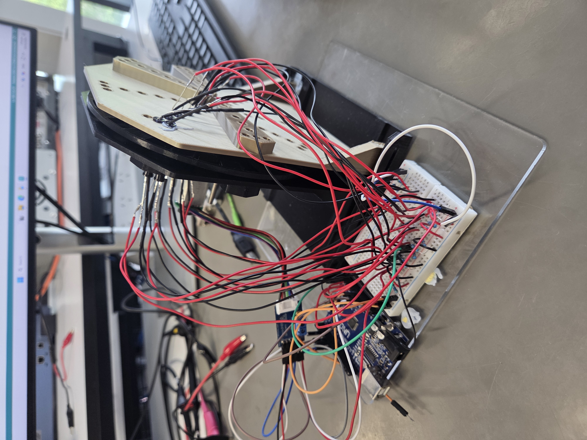
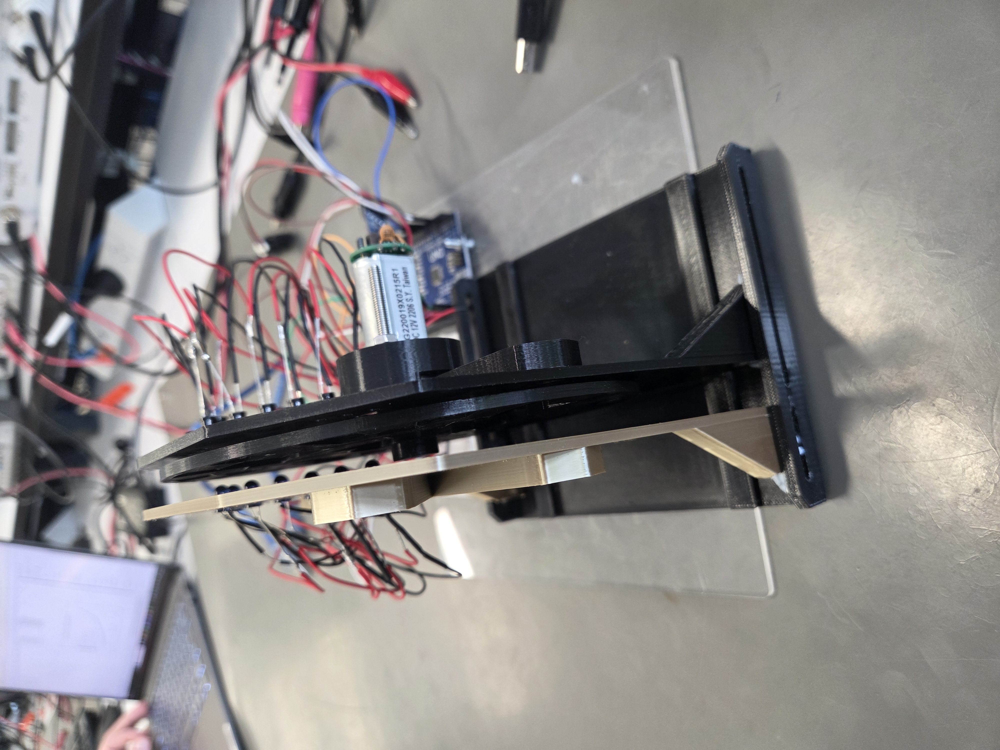
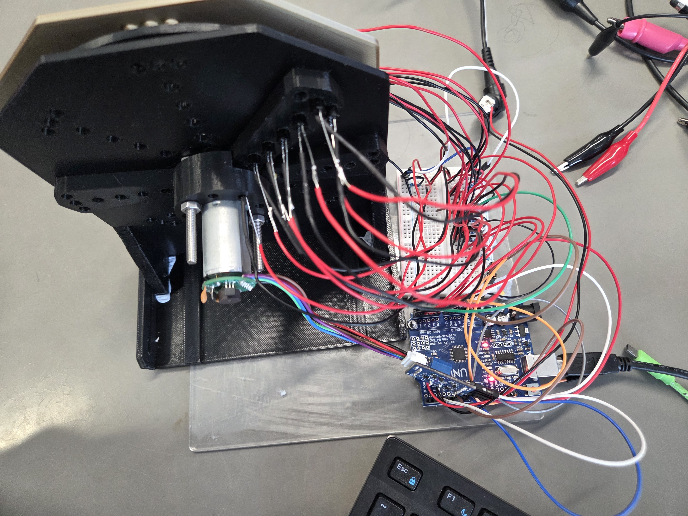

Optical Quadrature Encoder
Embedded System
Developed as part of a course project, my group designed, built and characterised two optical encoders for a DC motor from scratch:
- A quadrature encoder measuring shaft speed and direction.
- An absolute encoder measuring shaft position.
Both encoders share a single 6-track Gray code disc, then assembled onto the motor rig with infrared LED and phototransistor sensor pairs, connected as a circuit via breadboard and Arduino Uno. This disc and the 2x motor rigs were all designed in Autodesk Inventor CAD and 3D printed, see the photos!
I was responsible for the quadrature encoder from start to finish, a type of incremental encoder. It reads the 32-stripe outer track of the disc through two sensor pairs mounted a quarter cycle apart, producing two channels of square waves whose phase relationship gives the direction of rotation. I wrote the C++ firmware as a modular class around the encoder with functions including one that converts the analog sensor readings into logic levels with hysteresis thresholds. A lookup-table decoder then counts every edge on both channels, within 5-second windows then used to calculate the RPM speed. This window duration is also aligned with the motor’s built-in encoder, so the two readings can be compared directly to analyse accuracy, as seen in the video demo!
Testing couldn’t have been more important here for driving our design iterations. We continuously tested and retuned the values of the breadboard’s resistors connected to the phototransistors, using voltmeters and raw waveform plottings, to ensure the range swing of the ADC counts between light and dark is big enough to threshold reliably for a clean square wave of both channels.
Results: Our own implementation of the encoder was characterised against the built-in encoder across speeds up to 360 RPM in both directions, achieving under ±2 RPM consistently and reliably.



